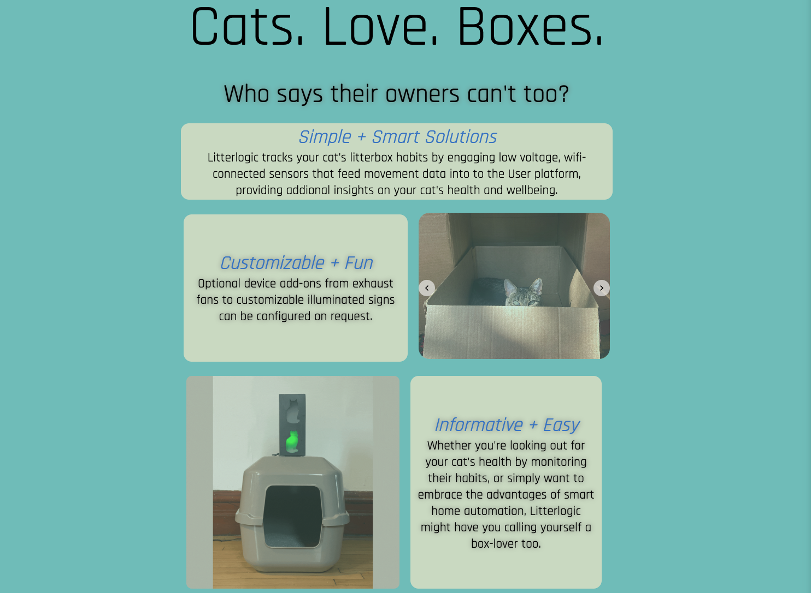
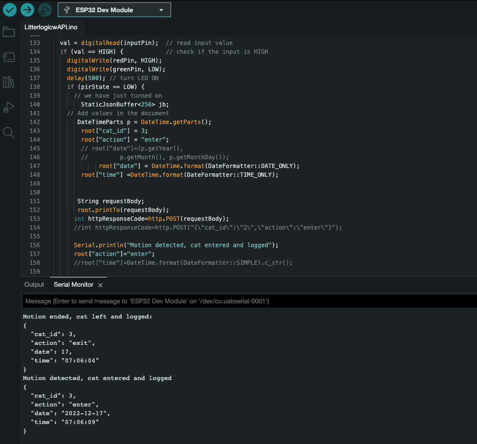
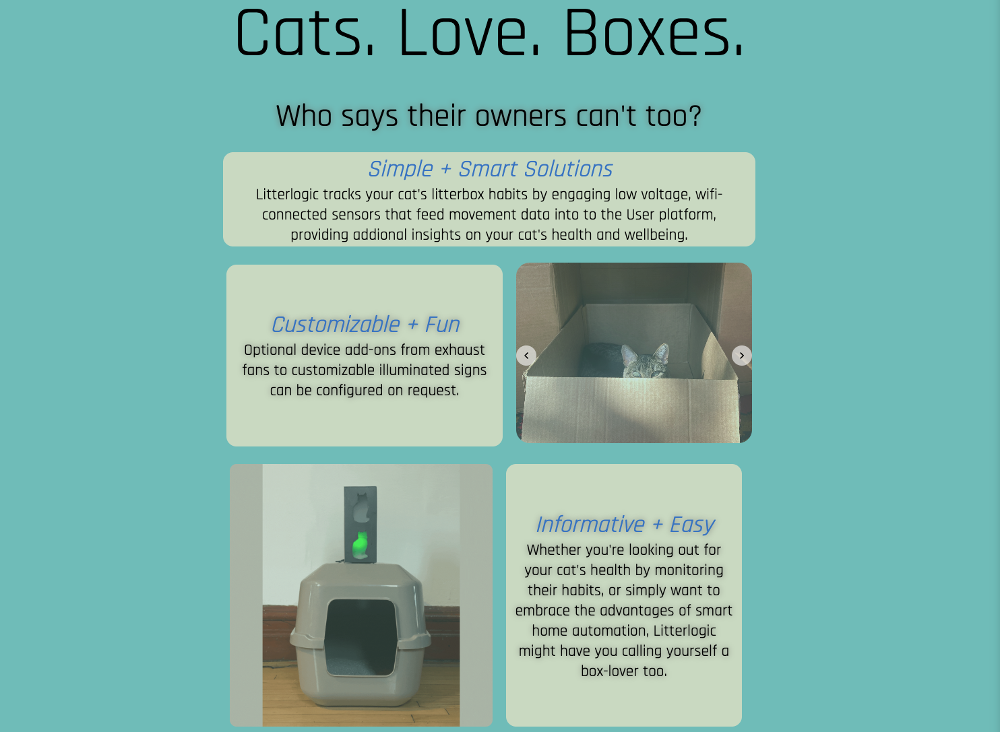
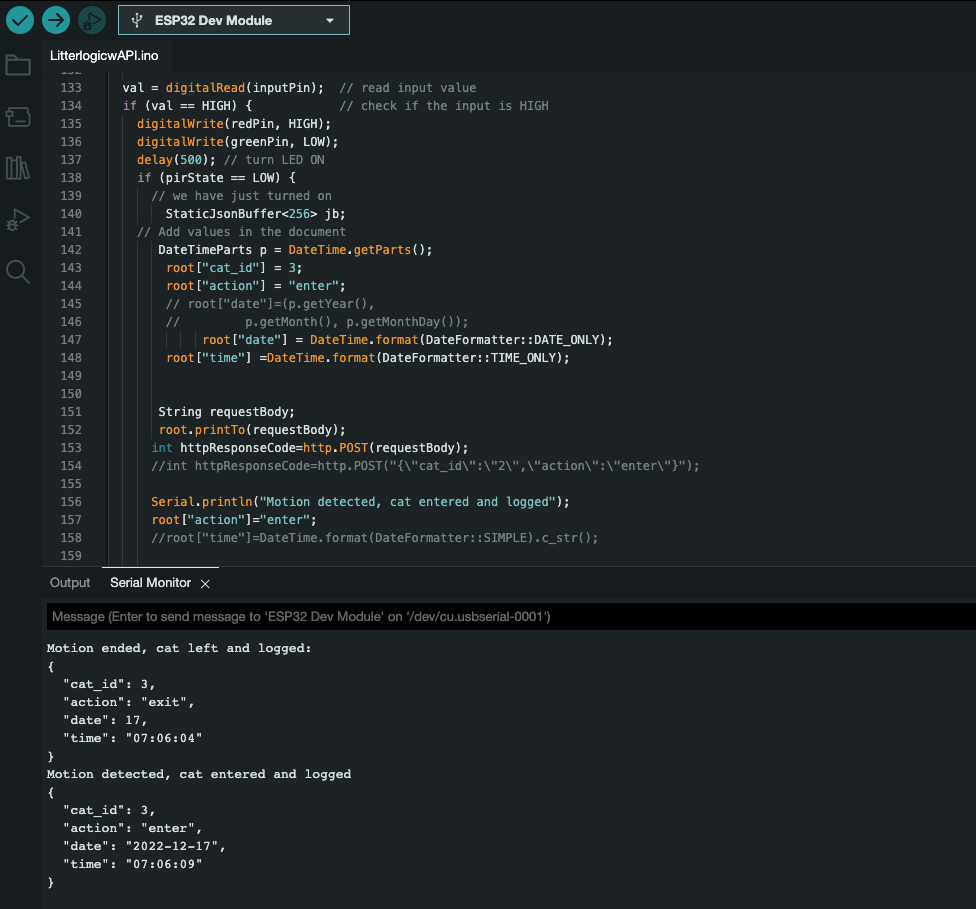

Deciding it was time to upskill after over a decade spent in engineering-adjacent roles,
I've been busy immersing myself in the world of software development with my sights set on breaking in once
and
for
all.
I'm proud to have logged over 500 hours of rigorous structured learning as a student in General Assembly's
Software
Engineering Immersive, as well countelss
hours of
self-guided exploration.
To say I'm eager to discover what doors these new skills might open is an
understatement.
Though I have previous expertise in deeply technical realms including robotics, automation, and
collaborative
software
applications - I've always had a strong passion for design and
aesthetics that I've not yet had
the privilege of exploring professionally. Through exercising my front-end chops in class, I've found
genuine fulfillment in using my right brain in the development process, which I've drawn from in the making of
this
website and the
works featured here. Somewhere within the
intersection between art and technology is where I hope to find myself.
What I love above all else is process, the joy of learning, and adding new skills
and
experiences to my
toolbelt. As a builder and dreamer myself, I can't wait to collaborate with teams daring to question,
reimagine,
and bring to life the
world's next great products and experiences.
Thanks for stopping by!


 


